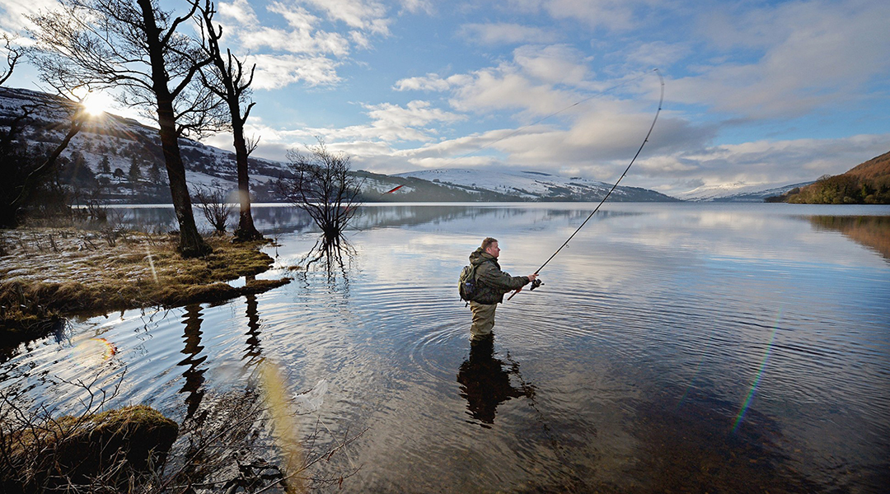

- 


Norwegians have had a connection with the ocean since our ancestors settled along the far-stretching coast. We have learned to appreciate the bounties that the ocean provides for us, now it is time to give back. This is why I produce salmon leather, to give consumers a sustainable alternative by doing what we Norwegians do best: utilizing the resources provided by the ocean. - Peder Holm